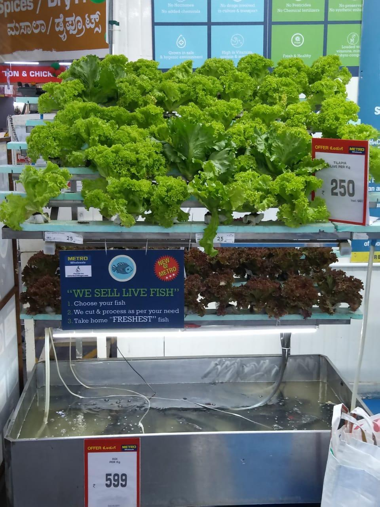
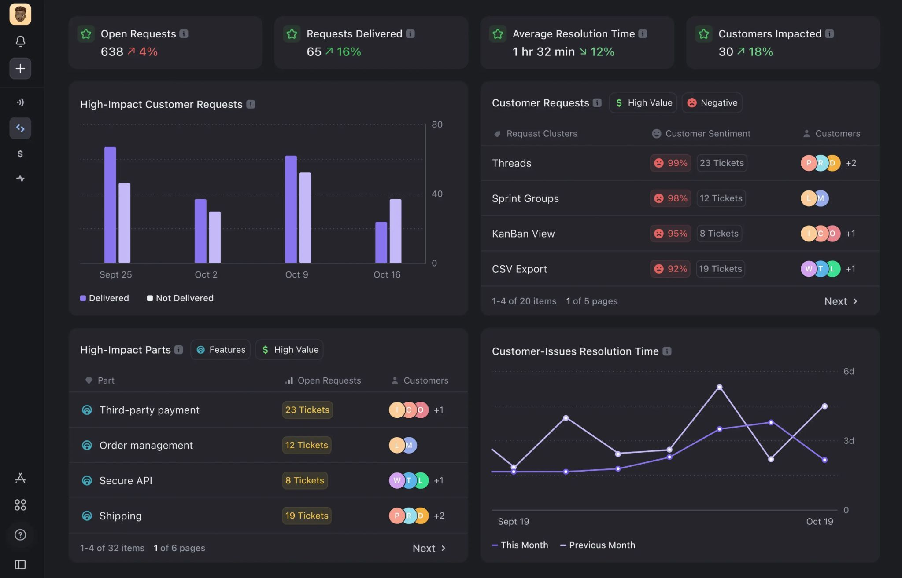
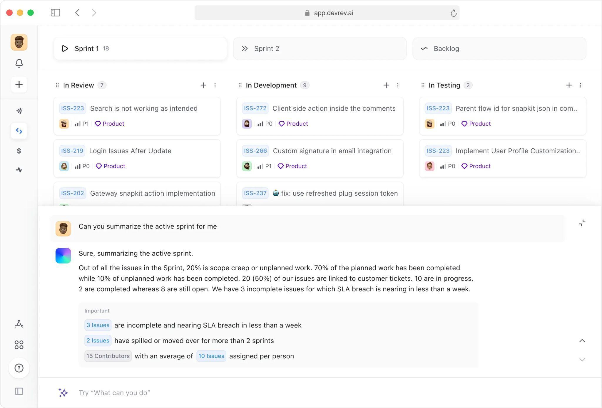
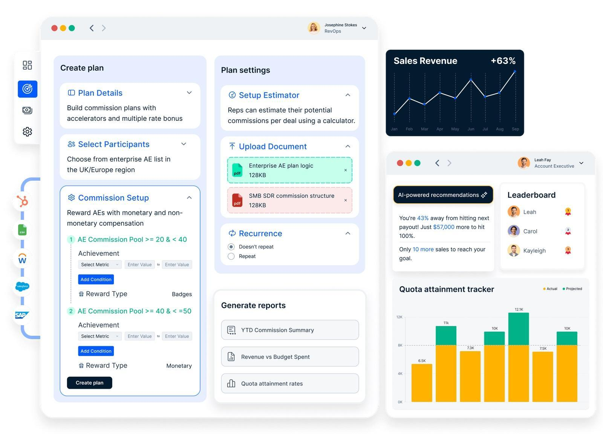
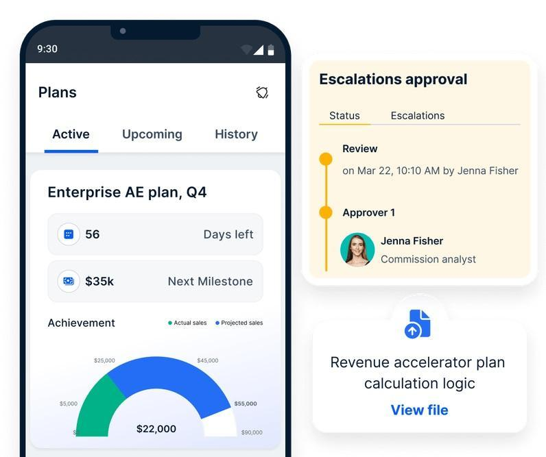
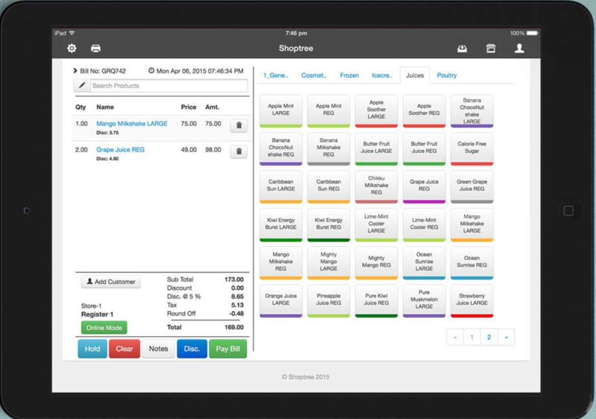

48,000 plants in 200 sq ft, using fish No soil. A lot of 3D-printed parts.
48,000 plants in 200 sq ft, using fish No soil. A lot of 3D-printed parts.I solve problems from first principles, fad or not. And as computing moves from deterministic to probabilistic, closer to how the real world actually works, I leaned into that shift with a master's at the University of Washington in computer vision, deep learning, robotics, and quantum computing, and I keep sharpening it.
Until recently I built and scaled products 0 to 1 to 10. Using science and technology to solve business problems is my instinct, so product development and management came naturally. Beyond B2B SaaS, I've conceptualized, built, launched, and iteratively improved AI copilots for Builders, the product and engineering teams who ship.
Right now I'm heads-down on the new normal: rapid prototyping, writing evals, and scaling what works. I'm most excited about products at the intersection of systems design, machine perception, data infrastructure, and quantum information.
I treated this master's as a career break optimized for information gain, relearning programming, applied math, and strategy across computer vision, deep learning, information theory, classical and privacy-preserving ML, robot manipulation, quantum algorithms, game theory, and IT strategy.
Cataloging electronic theses and dissertations at the UW Libraries under Cate Gerhart, who taught me what good management actually looks like.
3000+ abstracts across deep learning, robotics, quantum physics, epidemiology, ancient languages, Japanese poetry, forestry, Native American studies, and everything in between. Each one a tiny window into what someone, somewhere, is currently figuring out. The breadth keeps an engineer honest about what AI is being asked to serve.
In parallel, Statistical Learning and Computer Vision rewired how I read papers and frame evals. YOLOv8 detection feeding ByteTrack tracking feeding a temporal transformer at 0.54 mAP over 162K frames taught me what builds and what doesn't. The bottleneck is almost never the model. It is the data, the retrieval, and the labels around it.
Ten-plus years leading product as a manager, an IC, and a founder is my foundation. It taught me to look around the corner: to provision what a team needs now and next to build and scale a product that wins. So why spend a career break training models in computer vision, robotics, and machine learning? Five reasons.
The ten years are the foundation. The engineering is how I keep it sharp.
I took an early prototype to its first paying customers in about eight weeks, owning the whole thing: the voice pipeline, the prompts, the evaluation harness, the pricing, and the go-to-market. The bet was simple. In voice AI, reliability is what earns trust, so I built two features really well instead of ten features halfway.
When a managed service provider's office closes, their clients' problems do not. After-hours calls fall into three bad options: voicemail that quietly loses the caller, a human answering service that reads a script and files a half-useless ticket, or an on-call engineer woken up for a password reset. One design partner was paying over $800 a month and maintaining a 20-step Zapier workflow just to bridge their answering service into ConnectWise. The job to be done was clear: answer every call in seconds, hold a real conversation, resolve what can be resolved, and leave behind a clean, categorized ticket, reliably enough that an MSP would trust it with their own customers.
I joined when this was an early prototype and owned it end to end. I evaluated five voice pipelines against one rubric and chose the Deepgram Voice Agent over Twilio, because it folded speech-to-text, the language model, and text-to-speech into a single low-latency loop. Then I went hands-on. I rewrote the four system skills from 637 lines to 274 by treating the model's attention as a budget: front-load the rules that matter, delete the reference tables a model already knows. Quality went up.
The hardest problem was turn-taking, knowing when the caller has actually finished speaking. I reframed it as a binary classification problem so the team could tune Deepgram's endpointing with precision, recall, and an F1 target instead of trial and error. Because the product has to be trusted, I designed a fallback chain so that even a three-second hang-up still produces a ticket with the caller's number, and I wrote a 20-metric, three-tier evaluation framework (offline, shadow, and live) as the gate between alpha, beta, and GA. Alongside the build I assessed and reallocated a seven-person PM team, led hiring for a growth role, and left a structured handover across six documents.
The prototype reached alpha monetization in roughly eight weeks, with the pipeline benchmarking at 378ms median response and comfortable headroom on the latency target. I grew the funnel from three design partners to more than 35 prospects, designed a single outreach that converted nearly half the demos it reached, and priced the product to land several times cheaper than the incumbent on economics I had actually modeled. I also prototyped the GTM plumbing: Python pipelines pulling from ClickUp, Fathom, and HubSpot to refresh the customer-intelligence dashboards on their own.
Three things stuck. Reliability earns trust, not features, so the real MVP was two features done well. Measurement is a prerequisite, not a follow-up, so I instrumented the pipeline before there was any traffic to measure. And the highest-leverage thing a PM can do is close the gap between a metric and the felt experience: "F1 score" moved nobody until I drew the exact moment the agent talks over a caller.
I led an AI Copilot for DevRev's Build platform from prototype to launch in four months. It let anyone ask questions of their project data in plain language and automate the busywork, and it took support deflection from 40% to 90%.

Build is one of three DevRev products (Support, Build, Grow) on a shared system-of-record as platform, purpose-built for product-led organizations, uniting product, design, and engineering on one platform to plan, track, and ship customer-centric work. But the teams using it, and the support teams behind them, were buried. Senior engineers were spending hours a day triaging tickets by hand, and customers kept asking questions whose answers already lived in the project data and the docs.
I led Build from concept to launch with a 15-person cross-functional team, and designed its standout capability: a Copilot that lets anyone query project status and automate repetitive work in conversation. I drove it from prototype to beta to launch in four months. Under the hood it is a production RAG system, and the accuracy came from hybrid search, combining retrieval-augmented generation with self-query retrieval, plus classification models and ranking. In parallel I built a deep-learning classifier (K-means clustering with an NGBoost model) that auto-routed tickets, and laid the groundwork for the agentic task automation that later became a flagship.

Build launched and scaled to its first 50 mid-sized and enterprise customers within a year. The Copilot lifted answer deflection from 40% to 90% at under three seconds across 10,000+ queries a day. The classifier handled 10,000+ tickets a day and gave support teams back roughly 15 hours a day. I ran 40+ customer interviews to keep it honest, and led a distributed group of 10 product managers spanning Support, Build, Grow, and Platform across the US, Slovenia, and India.
Evaluations are what turn "better" into a number you can defend, and the bottleneck is almost never the model, it is the retrieval and the routing around it. And leading PMs across three time zones taught me that a crisp written spec travels further than any meeting.
I rebuilt the platform behind Compass, a sales-incentive and gamification product, to compute on more than two billion data points in real time for over five million users, and gave non-technical teams a way to build their own payout logic without filing an engineering ticket.

Compass serves rewards and recognition teams at insurance and logistics enterprises. The hard part is that incentive logic is genuinely complex, it changes constantly, and it has to be computed in real time across millions of agents while staying compliant. Worse, every rule change meant an engineering ticket, which slowed customer onboarding to a crawl.
I built and led a 35-person cross-functional team and redesigned the data platform to scale across countries. It became a multi-source computation engine: real-time ETL through SQL connectors and Azure Data Factory, compute on AWS and Redis, and a plug-and-play marketplace of connectors. The piece I am proudest of is the dynamic rule builder, a browser-based formula builder backed by a tree-based expression-evaluation algorithm, so that a non-technical user could build an expression rather than pick a static one from a dropdown.

The platform computed on more than two billion data points in real time, served over five million users across 50 enterprise customers, and held 99% reliability. Putting rule-building in users' hands cut enterprise implementation time by 70%, infrastructure work cut cost by 30%, and the business grew 50% month over month on a two-year roadmap I owned. I recruited the team that did it, five PMs, three TPMs, and five analysts, and presented quarterly reviews to the C-suite and board.
The biggest unlock was turning a developer task into a user capability. When you give people the power to express what they want, the platform scales itself, and you stop being the bottleneck.
I stood up a brand-new revenue vertical for an Indonesian auto marketplace, from zero to a million dollars in eight months, leading a 28-person team through fast, instrumented experimentation.
Oto, part of CarDekho, was scaling fast in Indonesia and needed a brand-new revenue vertical stood up quickly in a crowded market, while dealer operations were still largely manual.
I owned product for the new vertical end to end, leading a 28-person cross-functional team and shipping more than 15 features through rapid experimentation. I also planned an internal CRM and analytics platform to streamline how dealers worked day to day.
The vertical went from zero to $1M in eight months, and the dealer tooling lifted operations productivity by 50 to 70%.
In a zero-to-one vertical, the speed of learning beats the polish of any single feature. Instrument early, experiment often, and let the market tell you where to push.
I co-founded a bootstrapped company and built a restaurant point-of-sale that keeps billing even when the network drops. It grew to 150+ restaurants and 300+ enterprise customers, entirely without outside funding.

Indian restaurants and retailers needed dependable billing and inventory on inexpensive hardware and unreliable 2G networks, the kind that drop mid-transaction. The cloud POS systems of the day simply stopped working the moment the connection did.
With two co-founders and no outside funding, I helped build a software company that started as simple iPad billing and grew into a full POS and supply-chain platform for restaurants and retail. We wrote our own hardware SDKs so iOS and Android devices could talk to card terminals, thermal printers, and digital consoles, and we leaned hard into client-side compute so billing stayed robust through outages. On top sat a five-level multi-echelon inventory system with recipe-based stocking, demand forecasting, and anomaly detection.
Shoptree ran in 150+ restaurants across 400+ POS terminals for 1,000+ users, holding 99% uptime with under a second to print a receipt and under 13 seconds to process a card, even on 2G. We grew from zero to $1M and 300+ enterprise customers in 18 months, sustainably and unfunded. The inventory system cut pilferage by 30% across 100+ locations, and a v2.0 dropped churn from 14% to 7% while lifting average revenue per user by 30%. An API marketplace with eight-plus integrations cut onboarding time by 70%.
Constraints are a gift. Designing for the worst network in the room forced an architecture that worked everywhere, and it taught me to build for reliability first. Founding the company taught me every function, from writing code to chasing collections.
A computer-vision and ML project: spotting and classifying player actions across full soccer matches with spatiotemporal models, object detection and tracking feeding a temporal Transformer. It reached 0.54 mAP across 162,000 frames, and stays efficient enough to run on a laptop GPU.
Spotting fine-grained actions in a 90-minute match, a pass, a drive, the nothing in between, is both compute-heavy and badly imbalanced: most frames are background. Most published pipelines quietly assume a datacenter GPU. I wanted one that runs on a laptop.
I built a three-stage pipeline. A frozen YOLOv8 detects players and the ball and yields 512-dimensional spatial features; ByteTrack keeps identities consistent across frames; and a small Transformer encoder, two layers and four attention heads, reads 32-frame windows to classify the action. To make it tractable I cached the detector's features, filtered uninformative frames, and used class-balanced weighted sampling so the rare events were not drowned out, training with AdamW on the SoccerNet ball-action data.
The model reached 0.54 mAP and about 66% validation accuracy across 162,000 frames, and the Transformer clearly beat an LSTM baseline trained under the same conditions. Feature caching cut training compute by roughly 40%, so the whole thing ran on an M1 GPU.
Principled engineering, caching, sampling, attention, beats brute force. You can do real temporal computer vision on constrained hardware if you respect where the bottlenecks actually are.
Building it by hand taught me to frame vision problems the way a model actually sees them, not the way a slide deck does. It is how I stay grounded and ask sharper questions.
I taught a real six-jointed robot arm to grasp an object hidden behind an obstacle, and showed that planning in joint space, not Cartesian space, is what made the motion reliable enough to trust.
A six-degree-of-freedom arm has to grasp a bottle sitting behind a fixed obstacle without colliding with it. The naive approach, handing the planner a Cartesian position to reach, produces inconsistent joint configurations and sometimes fails outright.
On ROS and MoveIt, using the OMPL RRTConnect planner, I built and compared two strategies: unconstrained Cartesian targets versus deterministic joint-space targets. I logged every trial, its success mode, the end-effector orientation, the timing, to a CSV, and validated first in Gazebo simulation and then on a physical Kinova Gen3 Lite arm.
Constraining the plan in joint space took success from 40% with Cartesian targets to 100% in simulation, with zero grasp-height error and an identical orientation every run. On real hardware it held 98% pre-grasp success across 56 trials, clean sim-to-real transfer.
Determinism is reliability. Constraining the plan made the motion repeatable enough to trust on physical hardware, which is exactly the instinct I bring to shipping AI products.
Determinism as reliability is the same instinct I bring to AI products, and doing the build myself keeps me humble about what I ask engineers to do.
I tested whether a fine-tuned language model can truly forget specific text on request, a real privacy and compliance question, and found that one unlearning method erases the memory while keeping the model useful, and another destroys it.
Large language models memorize their training text, sometimes verbatim, which is a genuine problem under GDPR and the EU AI Act's right to be forgotten. Can you make a model delete specific data without retraining it from scratch, and without wrecking everything else it knows?
I compared two unlearning methods, gradient ascent and gradient difference, using LoRA adapters on Phi-2 and Llama-2-7B, with 4-bit quantization and a paged 8-bit optimizer to fit the work on available hardware. I measured three things: how much verbatim text remained, how much the model's general perplexity drifted, and whether a loss-based membership-inference attack could still tell training data from held-out data, all on the MUSE-Books benchmark.
Gradient difference removed verbatim memorization entirely while keeping general perplexity near baseline; plain gradient ascent erased the memory but destroyed the model's utility in the process. A side finding: memorization needs scale. The 7B model memorized the text, while the smaller Phi-2 largely did not.
Unlearning is empirical remediation, not a formal guarantee, so it complements differential privacy rather than replacing it. The retain-loss term is what keeps the model useful: the privacy-versus-utility tradeoff is the entire game.
Wrestling with the privacy-utility tradeoff first-hand makes me a sharper PM on AI governance, not a spectator reading summaries.